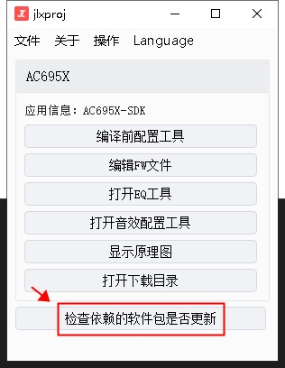
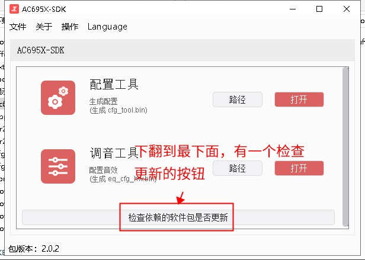

3.2. How to Update the Tools
Important
When updating, make sure the computer's network connection is working.
New tool versions usually include bug fixes and new features. For normal development and production, keep your tools up to date whenever possible.
The tools referred to here include the following:
Name |
Purpose |
Remarks |
|---|---|---|
Toolchain |
Development, building and linking |
Includes the compiler, linker, standard library files (libc.a), etc.; used to generate ELF files |
isd_download and other download tools |
Used to download firmware to the target device and to generate firmware files |
|
Configuration tool, audio tuning tool |
Development, configuration |
|
1-to-2 programmer |
Mass production programming |
|
1-to-8 programmer |
Mass production programming |
For various reasons, the update methods differ slightly between tools. They are summarized below:
3.2.1. Updating the toolchain
For how to update the toolchain (that is, the compiler, linker, etc.), see Updating the Jieli Toolchain.
Important
Note: This is only for updating the toolchain. It is unrelated to the other tools; do not confuse them.
3.2.2. Updating isd_download and other download tools
The SDK download directory usually contains an entry file, "下载目录工具更新.jlxproj", as shown below:

After opening it, click the [Check for updates] (检查更新) button to update. For details, see How to Upgrade Tools with a .jlxproj File
3.2.3. Updating the configuration tool, the audio tuning tool, etc.
The SDK download directory usually contains an entry file (with the .jlxproj extension). Double-click this file to open some of the tools needed for development, for example, the configuration tool and the audio tuning tool.
The window of this entry file looks slightly different in different SDKs. Here are some common variants:




After opening it, find the [Check whether dependent packages are updated] (检查依赖的软件包是否更新) button in the window and click it to check for updates.
3.2.4. Updating the 1-to-2 and 1-to-8 programmers
The 1-to-2 and 1-to-8 tools have their own dedicated update methods; for details, see:
3.2.5. Other Tools
For other tools not mentioned here, you can find download links for the latest versions in Latest Tool Versions.